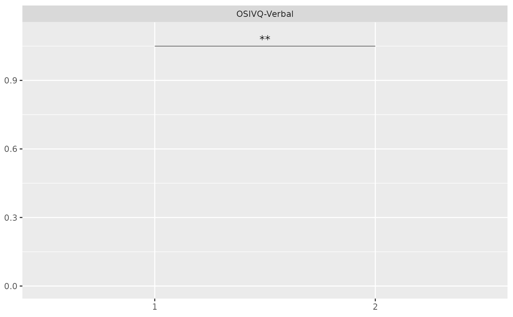

Add significance label and line to a plot
add_significance_geoms.RdAdd significance label and line to a plot
Arguments
- df
A dataframe containing one column per variable in the desired aesthetics (x, y, colour, etc.) and the following columns:
x_star: x position of the star labely_star: y position of the star labelstars: the star label (e.g., "", "", "")x_line: x position of the start of the linex_line_end: x position of the end of the liney_line: y position of the line
- size_star
Size of the star label. Default is 2.5.
- lw
Line width of the significance line. Default is 0.2.
Examples
group_effect_verbal <-
tibble::tibble(
Variable = factor("OSIVQ-Verbal"),
x_star = 1.5,
y_star = 1.08,
stars = "**",
x_line = x_star - 0.5,
x_line_end = x_star + 0.5,
y_line = 1.05
)
ggplot2::ggplot() +
ggplot2::scale_x_discrete(limits = factor(c(1, 2))) +
ggplot2::scale_y_continuous(limits = c(0, 1.1)) +
ggplot2::labs(x = NULL, y = NULL) +
ggplot2::facet_wrap(~ Variable, scales = "free_x") +
add_significance_geoms(group_effect_verbal, size_star = 4)
